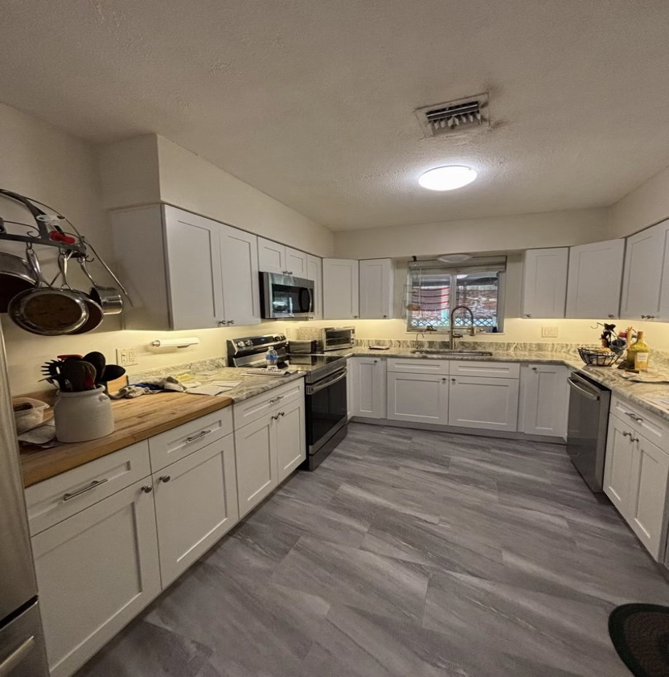
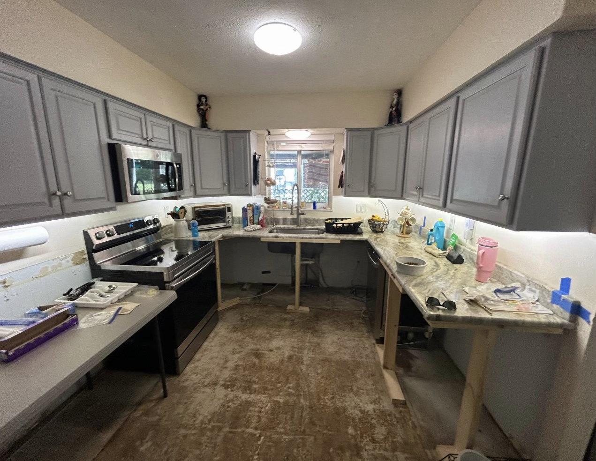
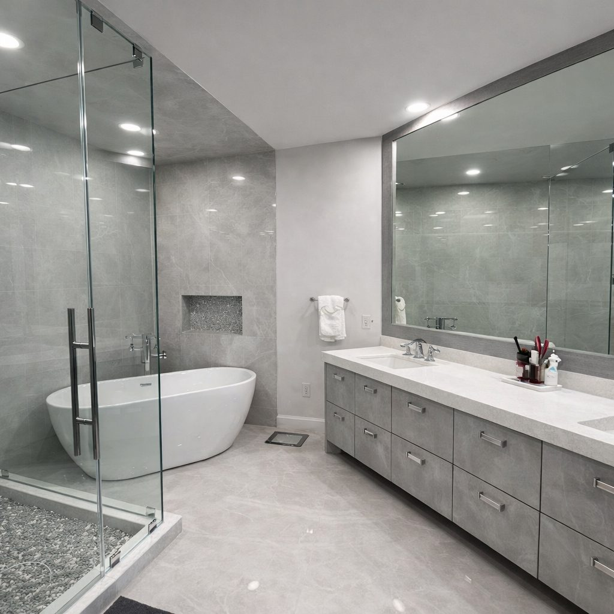
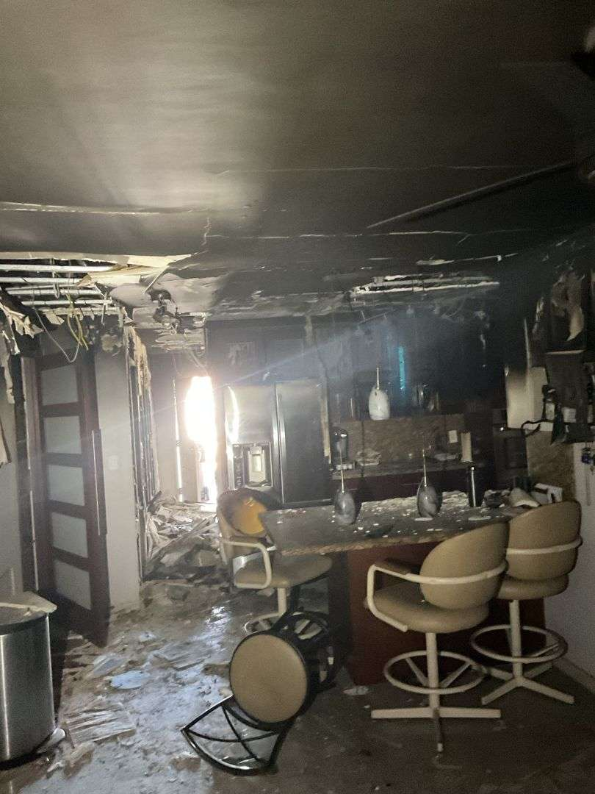
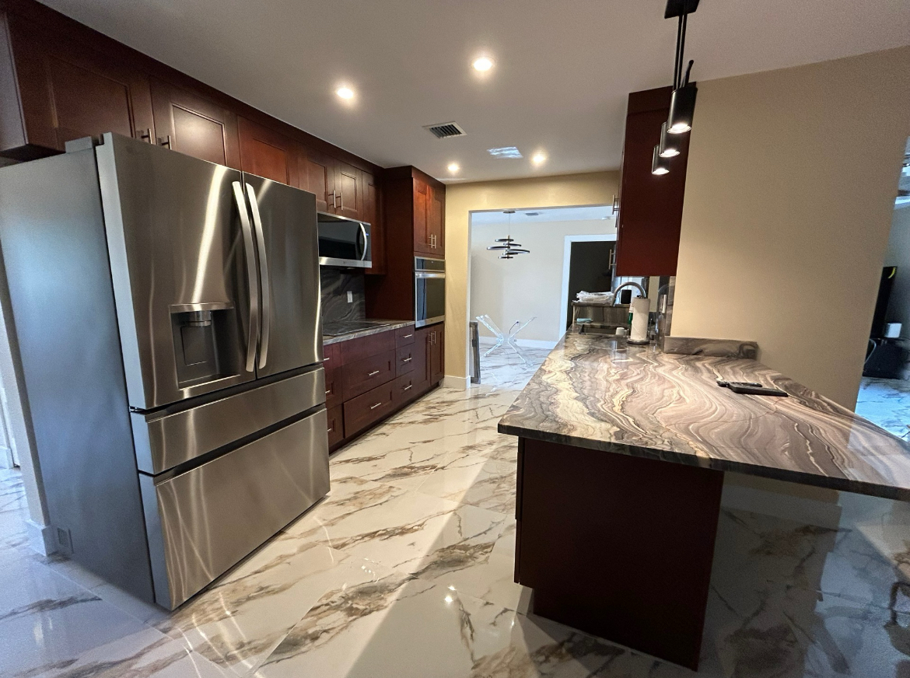

Call and assess
We gather the basics quickly, help you stabilize the situation, and confirm the right service response.
For more than 30 years, Cinergy Restoration has helped property owners recover from water, fire, mold, storm damage, and other emergencies. Our licensed team handles mitigation, cleanup, and reconstruction with 24/7 response when you need help most.
Clear communication and fast action keep the job moving from emergency response to final walkthrough.
We gather the basics quickly, help you stabilize the situation, and confirm the right service response.
Our team moves into cleanup, containment, drying, or emergency protection while documenting the scope.
We coordinate the next phase so your property gets back to a safe, clean, and usable condition.
Each service below takes you directly to its dedicated page.



Use the toggle to see before and after.


Use the toggle to see before and after.


Use the toggle to see before and after.
Real reviews from Cinergy clients.